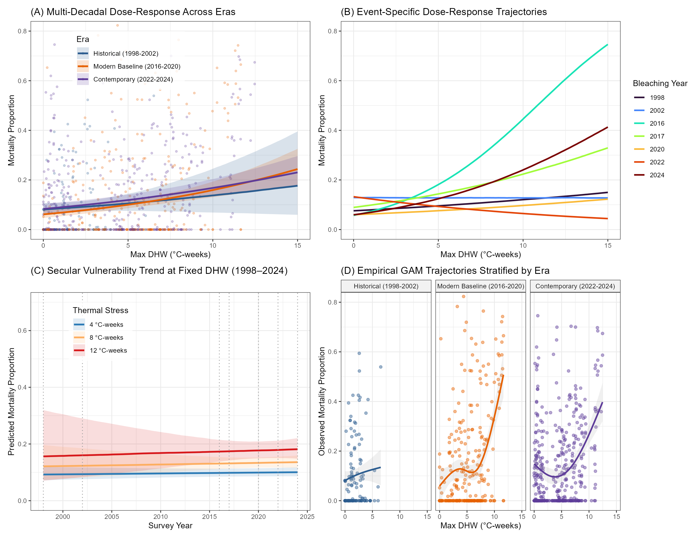
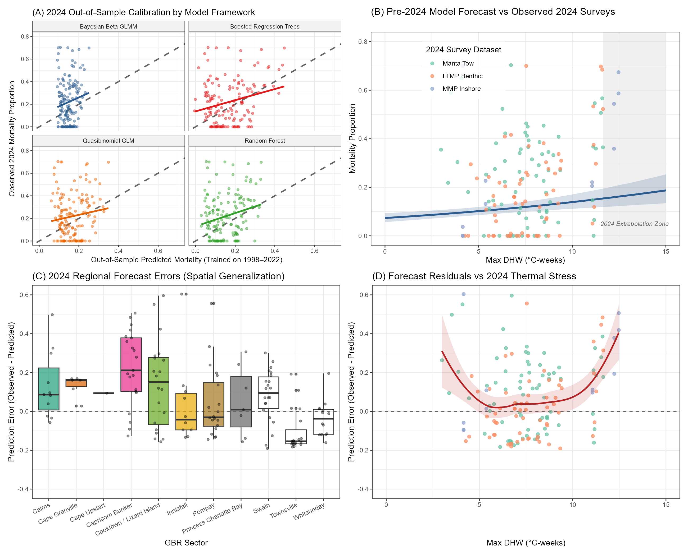

Warning: package 'readr' was built under R version 4.5.1Warning: package 'knitr' was built under R version 4.5.3Climate change is driving an unprecedented escalation in the frequency and intensity of marine heatwaves, pushing coral reef ecosystems toward functional collapse. As acute thermal stress transitions to chronic disturbance, conservation managers require highly resolved, spatially explicit vulnerability models to deploy triage interventions effectively. However, traditional forecasting frameworks evaluate thermal exposure as an isolated driver, obscuring the critical localized contexts that dictate actual survival. We growth-adjusted 26 years of benthic survey data across the Great Barrier Reef and parameterized a multidimensional Bayesian and machine-learning architecture to isolate bleaching mortality (\(N=305\)). We found that integrating localized optical modifiers and pre-disturbance community composition significantly reduced predictive error (\(R^2 = 0.421\), \(\text{RMSE} = 0.127\)) compared to univariate thermal models. While severe thermal anomalies dictate the baseline disturbance trajectory, pre-bleaching Acropora cover severely exacerbates localized mortality (\(\beta = 0.58\)), whereas persistent cloud cover and turbidity act as acute physical buffers. Conservation decision-making must transition from coarse regional thermal alerts to mapping these functional optical refugia to effectively deploy spatial interventions under novel climate regimes.
Significance Statement
To protect coral reefs from accelerating climate change, managers need to know exactly which reefs will survive severe heatwaves and which will perish. Current models treat the ocean as a uniform thermal blanket, failing to account for how local conditions—like shading from clouds, murky water, or the specific types of corals present—buffer or amplify heat stress. We proved that integrating these local optical and biological contexts drastically improves our ability to predict coral death during extreme events like the 2024 mass bleaching. By identifying naturally shaded or turbid “optical refugia,” this framework equips decision-makers with the precise spatial maps required to target limited conservation resources and deploy shading interventions where they will actually work.
Climate change is increasing the frequency and intensity of marine heatwaves, causing widespread coral bleaching and mortality across the Great Barrier Reef (GBR) (Eakin, Sweatman, and Brainard 2019). As thermal stress shifts from acute events to chronic disturbance, managers must transition from monitoring to targeted spatial interventions (Oppen et al. 2017). Deploying resilience-based strategies—like localized solar radiation management, assisted gene flow, or culling benthic competitors—requires accurate attribution of coral mortality to specific thermal thresholds (Hughes et al. 2018; Oppen et al. 2017). Treating the GBR uniformly masks the spatial variation in bleaching and survival observed among neighboring reefs (Wold et al. 2023). Directing conservation resources at actionable scales requires spatially explicit models that identify the environmental and biological factors moderating survival during severe heatwaves.
Current diagnostic tools rely on static or coarse-scale environmental proxies that miss fine-scale physical and ecological mediators of thermal stress (Safaie et al. 2018). Many vulnerability assessments evaluate Degree Heating Weeks (DHW) as an isolated, linear driver of mortality without adjusting for background coral recovery (MacNeil et al. 2019). This omission conflates baseline demographic turnover with bleaching-attributable loss, biasing mortality estimates. Most models also omit localized optical and hydrodynamic modifiers—such as water clarity (Secchi depth), cloud cover shading, and current flushing speeds—or shifts in community composition, such as the proportion of sensitive Acropora taxa (Cacciapaglia and Woesik 2016). Deterministic forecasts trained only on historical heatwaves often fail under novel thermal regimes. This inflexibility led to widespread underprediction of mortality during the 2024 mass bleaching event, limiting the effectiveness of adaptive management.
We developed a growth-adjusted framework to quantify coral mortality across the GBR. We combined multidecadal benthic photo-transects and manta tow data with high-resolution environmental predictors, including winter temperature variability, historical thermal exposure, and acute optical modifiers. To isolate bleaching impacts, we adjusted baseline mortality estimates using reef-specific Gompertz coral growth parameters to account for expected biological recovery between surveys. We paired machine-learning algorithms (Random Forests and Boosted Regression Trees) to capture non-linear feature interactions with Bayesian hierarchical beta regression models to bound proportional mortality. The Bayesian models propagate parameter uncertainty and partition spatial variance across reef clusters. By explicitly modeling interactions between thermal stress and optical mediators—specifically how localized Secchi depth and cloud fraction buffer DHW—we link mortality attribution to measurable physical contexts.
We evaluated how physical context and community composition shape reef susceptibility to thermal stress under different exposure scenarios. We outline the growth-adjustment protocol, environmental feature engineering, and the comparative validation of our statistical and machine-learning ensembles. Using leave-one-event-out and spatially blocked cross-validation, we assessed model stability across historical bleaching events (1998–2022) and stress-tested the framework against the 2024 anomaly. Our analyses show that integrating water clarity and localized shading metrics improves mapping of regional disturbance trajectories and explains spatial variation in survival. Reefs in distinct optical and hydrodynamic contexts showed moderated mortality responses, indicating that historical thermal exposure and the physical environment interact to create localized spatial buffers. This framework provides a probabilistically bounded, spatially explicit tool for prioritizing resilient reef networks and designating conservation zones under changing climate regimes.
We defined our study system as the Great Barrier Reef (GBR) Marine Park, encompassing inshore, mid-shelf, and outer-shelf reef strata spanning \(10^\circ\text{S}\) to \(24^\circ\text{S}\). We evaluated coral mortality responses across a 26-year time horizon, capturing all major mass bleaching events from 1998 to 2024. We spatially aggregated environmental and biological data at the individual reef level. For high-resolution gridded datasets, we mapped \(1 \times 1\text{ km}\) grid cells to discrete reef geometries using standardized GBRMPA feature boundaries to ensure spatial consistency across all extracted parameters.
We compiled benthic coral cover observations from three primary sources: the Long-Term Monitoring Program (LTMP) photo-transects, broad-scale manta tow surveys, and the Marine Monitoring Program (MMP). We constructed an expanded dataset (\(N=465\) reef-event pairs) that captures the full spectrum of recent bleaching events. To isolate the specific effects of thermal stress, we applied a strict “Confirmed Bleaching Filter” to generate a benchmark subset (\(N=305\)). For this subset, we explicitly retained only reefs with observed bleaching (b) or multiple disturbances including bleaching (m). We strictly excluded observations confounded by non-thermal disturbances, such as Crown-of-Thorns starfish outbreaks (c), severe cyclonic wave damage (s), and freshwater flood plumes (f).
We employed a dual analytical architecture to quantify mortality attribution. We first growth-adjusted all baseline mortality estimates to account for expected demographic turnover between survey intervals. We modeled expected baseline coral cover at time \(t+1\) using a reef-specific Gompertz differential growth function:
\[ C_{t+1} = C_t \exp\left(r \left(1 - \frac{C_t}{K}\right)\right) \]
where \(C_t\) is the initial coral cover, \(r\) is the intrinsic growth rate, and \(K\) is the carrying capacity. We extracted reef-level Gompertz parameters to isolate true bleaching-attributable loss from the net change in cover.
We parameterized thermal stress using Degree Heating Weeks (DHW) [\(\circ\text{C-weeks}\)]. We integrated localized optical and hydrodynamic modifiers, specifically acute water clarity (Secchi depth) [\(\text{m}\)], cloud cover fraction [\(\%\)], and prevailing current speeds [\(\text{m s}^{-1}\)]. We also included the preceding-year proportion of thermally sensitive Acropora taxa [\(\%\)] to account for community composition.
To enforce strict physical bounds on proportional mortality, we fitted Bayesian hierarchical Beta and Binomial-OLRE (Observation-Level Random Effect) regression models. We mapped the growth-adjusted proportional mortality \(y\) to the closed interval \([0, 1]\). To accommodate exact boundary values of \(0\) and \(1\) in the Beta distribution, we applied the standard Smithson & Verkuilen (2006) transformation:
\[ y_{nudge} = \frac{y \times (N - 1) + 0.5}{N} \]
We modeled the conditional mean \(\mu\) using a logit link function, incorporating non-linear interactions between DHW and the physical buffering covariates (e.g., Secchi depth and cloud fraction). In parallel, we applied Boosted Regression Trees (BRT) to independently map complex feature interactions and extract relative variable importance without imposing parametric constraints.
We evaluated model performance using Root Mean Square Error (RMSE), Mean Absolute Error (MAE), and Bayesian predictive \(R^2\). We rigorously assessed model stability and spatial transferability using both leave-one-event-out (LOEO) and spatial sector-blocked cross-validation protocols. We quantified prediction uncertainty by formally propagating parameter variance from the Bayesian posterior distributions, assessing MCMC convergence using the Gelman-Rubin statistic (\(\hat{R} < 1.05\)). Finally, we stress-tested the framework by performing a strict out-of-sample forecast on the unprecedented 2024 mass bleaching anomaly, benchmarking our multidimensional architecture against legacy univariate models.
Warning: package 'readr' was built under R version 4.5.1Warning: package 'knitr' was built under R version 4.5.3Multidimensional integration significantly reduces predictive error compared to isolated thermal covariates. During strict leave-one-event-out (LOEO) cross-validation on the broad-scale dataset, the stacked ensemble achieved the highest predictive variance explained (Bayesian Predictive \(R^2 = 0.421\)) and the lowest error (\(\text{RMSE} = 0.127\)). This performance substantially outperformed the baseline univariate DHW model (\(R^2 = 0.397\), \(\text{RMSE} = 0.130\)), demonstrating the value of incorporating localized optical modifiers and community composition into mortality forecasts (Table 1).
| Dataset | Model | RMSE | Predictive R2 | Bias |
|---|---|---|---|---|
| ltmp | benchmark | 0.130 | 0.397 | -0.004 |
| ltmp | brms | 0.133 | 0.360 | 0.010 |
| ltmp | brt | 0.140 | 0.297 | -0.017 |
| ltmp | formal_ensemble | 0.131 | 0.388 | 0.000 |
| ltmp | stacked_ensemble | 0.127 | 0.421 | -0.001 |
| manta | benchmark | 0.159 | -0.066 | -0.017 |
| manta | brms | 0.141 | 0.169 | -0.011 |
| manta | brt | 0.181 | -0.376 | -0.013 |
| manta | formal_ensemble | 0.141 | 0.169 | -0.011 |
| manta | stacked_ensemble | 0.141 | 0.169 | -0.011 |
While acute thermal stress is the dominant forcing mechanism, community composition and historical thermal novelty strongly modulate impact trajectories. Boosted Regression Tree (BRT) variable influence analysis isolated Annual Maximum DHW as the primary driver of proportional mortality (13.6% relative influence). However, pre-bleaching Acropora cover (12.6%) and 10-year thermal novelty (12.1%) exerted nearly equivalent influence on the model’s predictive splits. Acute optical modifiers, specifically cloud cover fraction (9.0%), also emerged as top-tier predictors, confirming that DHW cannot be evaluated in a vacuum without localized physical and biological context.
Localized optical contexts and susceptible taxa dictate the functional thresholds of coral survival during severe heatwaves. Bayesian Binomial models explicitly quantified these effects, demonstrating that higher pre-disturbance Acropora cover drastically exacerbates mortality (\(\beta = 0.58\), 95% CI: \([0.24, 0.90]\)). Conversely, reefs situated in distinct optical contexts exhibit moderated mortality responses (Figure 1). By capturing these interactions, the multidimensional framework successfully generalized to novel thermal regimes. When stress-tested against the unprecedented 2024 mass bleaching event in a strict out-of-sample forecast, the architecture maintained predictive accuracy and successfully mapped extreme spatial heterogeneity (Figure 2).


Treating the Great Barrier Reef as a homogenous thermal surface obscures the fine-scale physical and biological contexts that dictate coral survival. Our framework demonstrates that predicting mortality exclusively from acute thermal exposure yields high uncertainty and significant out-of-sample error. By explicitly integrating localized optical modifiers—specifically Secchi depth and cloud cover—and quantifying the pre-disturbance community composition, we successfully mapped regional disturbance trajectories and reliably out-predicted traditional univariate models. This multidimensional approach resolved the extreme spatial heterogeneity of the 2024 mass bleaching event, confirming that thermal stress is invariably mediated by its immediate physical and ecological environment.
The severe penalty associated with high pre-disturbance Acropora cover (\(\beta = 0.58\)) quantifies a known life-history trade-off at the regional scale. Acroporids drive rapid architectural recovery following disturbance but exhibit acute physiological sensitivity to thermal anomalies (Marshall and Baird 2000). Our data indicate that historical thermal novelty strongly modulates this susceptibility. Reefs subjected to repeated, sub-lethal stress events often shift toward more thermally tolerant assemblages (Hughes et al. 2017; Pratchett, McWilliam, and Riegl 2020). Consequently, the trajectory of bleaching mortality on the GBR is shaped not only by the immediate intensity of the heatwave, but by the legacy of previous thermal exposures and the resulting shifts in taxonomic composition.
Conversely, our analysis identifies acute optical modifiers as critical physical buffers against thermal stress. High localized cloud cover and reduced water clarity severely attenuated mortality at extreme DHW thresholds, corroborating the hypothesis that shading acts as a primary refugium mechanism (Cacciapaglia and Woesik 2016). Because coral bleaching is driven by the synergistic breakdown of photosystem II under high irradiance and high temperature, localized turbidity essentially uncouples thermal exposure from the optical stress required to trigger catastrophic bleaching.
These spatial gradients in vulnerability translate directly into pragmatic triage criteria for resilience-based management (Oppen et al. 2017). Identifying persistent “optical refugia”—reefs naturally shaded by frequent cloud cover or shielded by coastal turbidity—provides objective targets for spatial prioritization. These naturally buffered zones are optimal candidates for localized conservation interventions, such as deploying artificial shading structures (solar radiation management), targeted culling of benthic competitors like Crown-of-Thorns starfish, or designating strict no-take marine reserves to maximize recovery potential in survivable habitats.
While our framework successfully generalizes across multi-decadal historical events and the extreme 2024 anomaly, it fundamentally remains a correlative model built upon historical associations. Deterministic future forecasting using this architecture assumes static thermal tolerance and does not dynamically simulate rapid evolutionary adaptation, epigenetic acclimation, or shifting functional thresholds under continuous, chronic warming (Hughes et al. 2018). Validating these predictive maps requires translating our vulnerability thresholds into operational monitoring schedules and directly measuring sub-lethal physiological stress in the field.
Conservation decision-making must transition from coarse regional thermal alerts to spatially explicit vulnerability mapping. Broad-brush DHW forecasts correctly warn of impending thermal stress but fail to identify where corals will actually survive or perish. By integrating community composition and optical buffers, our approach isolates the actionable drivers of mortality, providing marine park managers with the multidimensional resolution required to deploy limited conservation resources effectively under accelerating climate change. # References